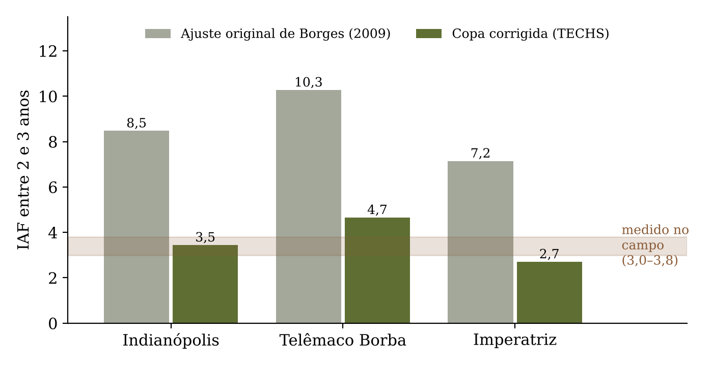
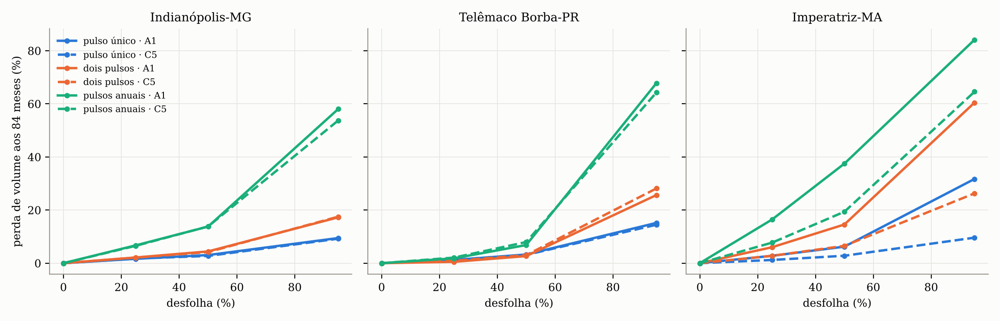
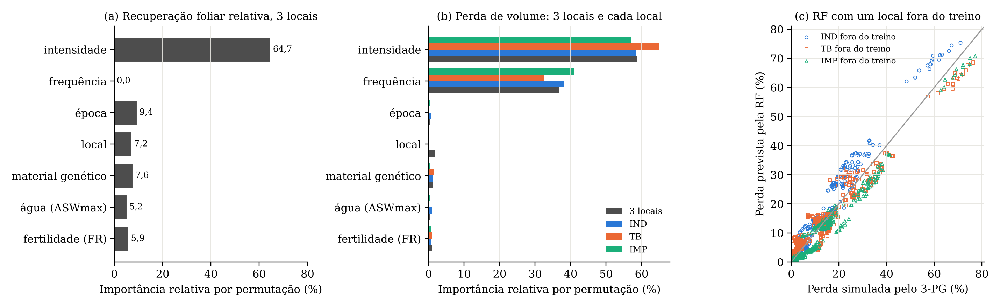
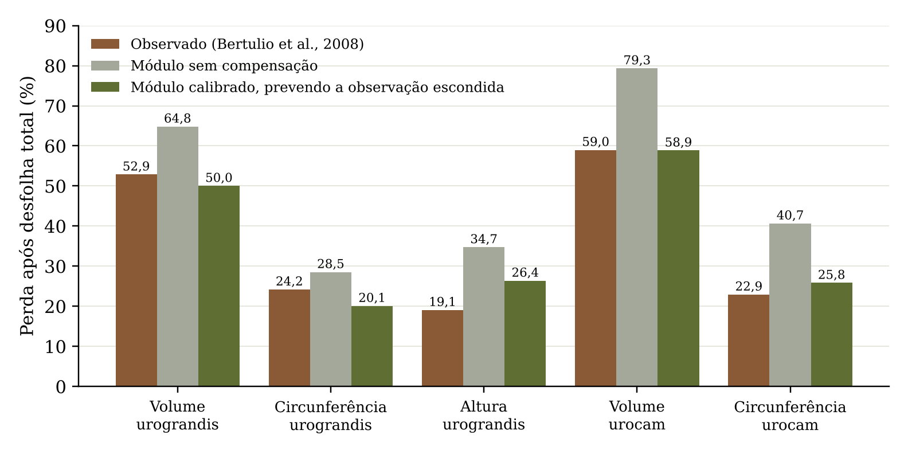
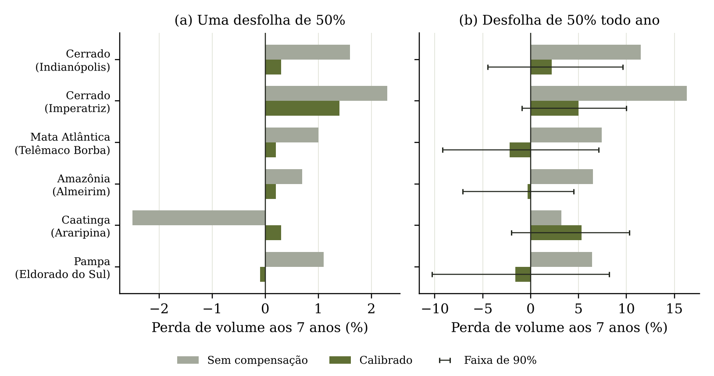
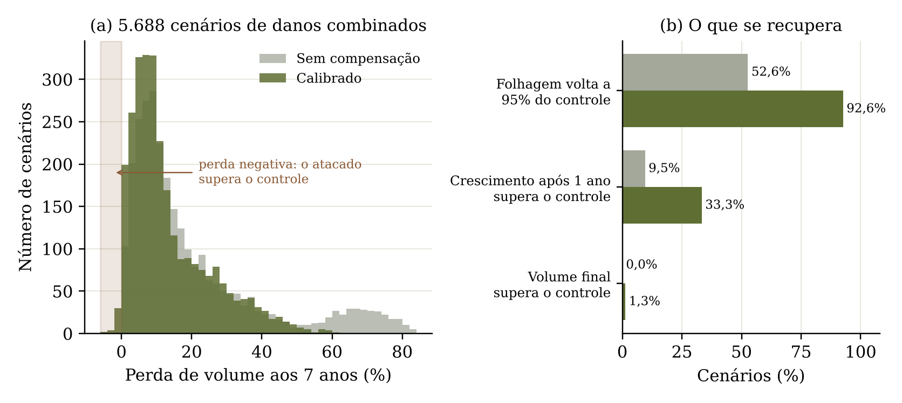
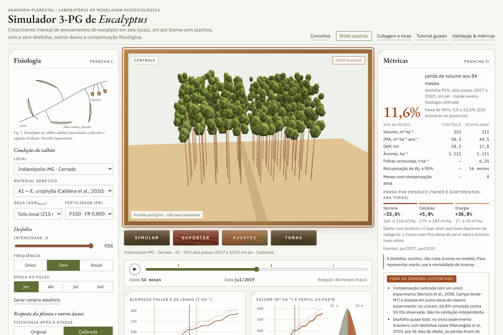

Guia ilustrado · TCC II · Engenharia Florestal · UFU
Quanto uma praga custa ao eucalipto?
O módulo de desfolha para o modelo 3-PG, explicado passo a passo: o problema, o modelo, cada teste que ele passou, o que ele ainda não sabe fazer e para onde o trabalho pode seguir.
Bernardo Teixeira de Castro · Orientador: Álvaro Augusto Vieira Soares · Coorientadora: Dra. Gabriela Cristina Costa Silva (UFRB)
Material de apoio ao TCC II (versão final v4, 02/11/2026). Todos os números vêm do TCC e da auditoria (528 de 528 números conferidos).
O caminho, em 14 passos
Cada passo responde a uma pergunta. Se quiser só a ideia geral, leia os quadros verdes; os quadros cor de terra mostram onde algo deu errado e como foi corrigido.
O problema: por que a desfolha importa
O 3-PG: como o modelo faz a árvore crescer
O módulo de danos: quatro formas de ferir a árvore
Conferir o código: verificação
Onde simular: seis locais, um por bioma
Os clones e a copa corrigida
Quanto a desfolha custa
O que mais pesa na perda
A árvore reage: a compensação
Calibrar: ajustar a reação a um experimento
Testar: validação cruzada, teste independente e evidência contrária
Biomas e possibilidades
A Akademia Florestal
Como tudo é conferido: auditoria e reprodutibilidade
Três palavras que aparecem o tempo todo
A regra do trabalhoSó dados publicados. Nenhum número inventado. Se não há fonte, o texto diz que não há. E cada um dos três degraus acima é dito pelo nome certo: um teste do mesmo experimento não é chamado de validação.
Passo 1
O problema: folhas perdidas viram madeira perdida
Lagartas, formigas-cortadeiras, psilídeos e doenças tiram folhas dos plantios de eucalipto. Sem folha, a árvore capta menos luz, faz menos açúcar e forma menos madeira. Mas o tamanho do prejuízo muda com tudo ao redor: quanto foi tirado, quantas vezes, em que época, com quanta água no solo, em qual clima e em qual clone.
Medir todas essas combinações no campo levaria décadas. No Brasil, os experimentos publicados tiraram folhas de árvores jovens em poucos lugares. A saída é usar um modelo de crescimento, que deixa testar milhares de combinações no computador.
quanto
Intensidade: 25, 50 ou 95% das folhas.
quantas
Frequência: uma vez, duas vezes ou todo ano.
onde
Clima, solo e clone de cada local.
O 3-PG é um dos modelos mais usados no mundo para plantações, mas não sabia representar esse dano. Outros grupos já tinham feito algo parecido em outros modelos (CABALA, na Austrália) e no próprio 3-PG em Portugal (3PG.d), ambos para E. globulus. Não havia um módulo conferido contra o r3PG e aplicado a eucaliptos brasileiros em todos os biomas com plantio.
A pergunta do TCCDá para construir um módulo de desfolha para o 3-PG, conferir que ele funciona, ajustá-lo a dados brasileiros e dizer com honestidade o que ele pode e o que não pode afirmar?
Passo 2
O 3-PG: a árvore como uma fábrica de açúcar
A cada mês, o 3-PG faz a mesma conta. A copa capta luz. A luz vira açúcar pela fotossíntese, mais ou menos conforme a temperatura, a água, a umidade do ar e a idade. O açúcar é dividido entre folhas, tronco e raízes. Folhas velhas caem, e o tronco acumulado vira volume de madeira.
Por que isso importa para a desfolhaA praga corta o circuito na primeira caixa: menos folha, menos luz, menos açúcar, menos tronco. E o efeito se arrasta, porque a copa leva meses para voltar ao tamanho.
O trabalho usou a versão do 3-PG do pacote r3PG (v0.1.7), reescrita em Python para poder receber o módulo novo.
Passo 3
O módulo de danos: quatro formas de ferir a árvore
O módulo entra no meio do ciclo mensal do 3-PG e faz quatro coisas, que podem ser ligadas juntas ou separadas.
Mecanismo
O que faz no modelo
Exemplo de agente
1. Desfolha
Tira uma fração d das folhas no mês do ataque.
Lagartas, formigas, psilídeo
2. Perda de eficiência
As folhas ficam, mas fazem menos fotossíntese (fração r).
Percevejo-bronzeado, ferrugem
3. Morte de árvores
Remove uma fração m das árvores, com folhas, tronco e raízes.
Murchas, cancros
4. Reação da árvore
As folhas que sobram fazem mais fotossíntese, a transpiração se mantém e mais açúcar vai para refazer a copa.
Resposta fisiológica medida em eucalipto
A chave de segurançaSem ataque, ou com a reação desligada, o módulo dá exatamente o mesmo resultado do 3-PG original. Assim, qualquer diferença nos resultados vem do dano, e não de um erro escondido no código.
Passo 4
Conferir o código antes de acreditar nele
Antes de qualquer resultado, o código precisa provar que faz o que deveria. O modelo em Python foi comparado com o r3PG original em 308 talhões sem ataque, mês a mês, em folhas, tronco, raízes, volume, IAF e diâmetro.
1,000
R² entre o código do TCC e o r3PG original nos 308 talhões. As diferenças são do tamanho do erro de arredondamento do computador.
49
testes automáticos, incluindo testes que inserem defeitos de propósito para ver se são detectados. Todos passam.
8
cenários em que a plataforma (JavaScript) dá exatamente o mesmo resultado do Python.
O que a verificação não garanteEla garante que o modelo é o 3-PG e que a desfolha é aplicada como descrito. Não garante que o modelo acerte o campo. Para isso existem os passos 10 e 11.
Depois, o crescimento sem ataque foi comparado com o que se mede. Em Telêmaco Borba, a produção de tronco do clone A1 entre dois e três anos ficou 9% acima da medida pela rede TECHS no mesmo clone (BINKLEY et al., 2017). Esse dado ajudou a ajustar o clone, então não é um teste independente, e o texto diz isso.
Passo 5
Onde simular: seis locais, um por bioma
O trabalho começou com três locais da iniciação científica e ganhou um local em cada bioma brasileiro com plantio de eucalipto. O Pantanal ficou fora: não tem plantio comercial, e o 3-PG não representa alagamento.
Local
Bioma
Temperatura média (°C)
Chuva anual (mm)
Meses secos
Água no solo (mm)
Indianópolis-MG
Cerrado
23,2
1.129
mai–set
215
Imperatriz-MA
Cerrado
28,7
1.151
mai–set
210
Telêmaco Borba-PR
Mata Atlântica
20,4
1.398
nenhum
214
Almeirim-PA
Amazônia
27,3
1.862
set–out
219
Araripina-PE
Caatinga
26,9
572
mai–nov
194
Eldorado do Sul-RS
Pampa
19,9
1.459
nenhum
145
O clima veio da NASA POWER, de 2015 a 2024, dia a dia, somado em meses. O solo veio de sítios vizinhos da rede TECHS ou do mapa mundial SoilGrids, convertido em água disponível por uma equação brasileira (PTF-ZARC).
Por que tantos climasA mesma desfolha pode custar muito num lugar e pouco em outro. Com climas tão diferentes, do semiárido de Araripina à Amazônia, dá para ver como o clima muda o prejuízo.
Passo 6
Os clones e a copa que estava grande demais
O modelo precisa de parâmetros de cada clone. O principal foi o A1 (E. urophylla), ajustado por Caldeira et al. (2020) com medições da rede TECHS. Para comparação, entraram três ajustes de Borges (2009) para híbridos E. grandis × E. urophylla do Cerrado mineiro: C5, C2 e C4.
O problema encontradoCom os valores de Borges, as copas chegavam a IAF de 8 a 11, contra 3,0 a 3,8 medidos no campo. Com uma copa fechada demais, tirar metade das folhas quase não muda a luz captada. Por isso, os clones de Borges pareciam "resistentes" à desfolha, quando o problema era só a copa irreal. E o C5 era usado na calibração, no teste independente e nos biomas, então o erro contaminava quase tudo.

Índice de área foliar (IAF) do clone C5 entre 2 e 3 anos, antes e depois da correção. Faixa cor de terra: valores medidos na rede TECHS.
A correção: dois parâmetros de Borges, a queda de folhas e a parte do crescimento que vai para as folhas, foram trocados pelos medidos na TECHS. O resto do ajuste de Borges continua. As copas ficaram com IAF entre 2,4 e 5,6, e a produção continua alta, de 36 a 65 m³ por hectare por ano.
O que mudou depoisCom copas realistas, os clones perdem quase o mesmo: com 50% de desfolha em Indianópolis, o C5 perdeu 2,7% do volume e o A1, 3,0%. A diferença que aparecia antes era um artefato, e não genética.
Passo 7
Quanto a desfolha custa
Foram simulados 2.408 tratamentos nos três locais iniciais, combinando intensidade, frequência, época, água e fertilidade. A perda é medida aos sete anos, em relação ao talhão sem ataque.

Perda de volume aos sete anos por intensidade e frequência da desfolha, clones A1 (linha cheia) e C5 (tracejada).
1,6–15,2%
Um ataque, de 25 a 95%, no clone A1, em Indianópolis e Telêmaco Borba.
17–26%
Dois ataques de 95%: 17,3% em Indianópolis e 25,6% em Telêmaco Borba.
até 68%
Ataques todo ano: 58,0% em Indianópolis e 67,8% em Telêmaco Borba.
A liçãoAs folhas voltam rápido; a madeira, não. Um ataque custa pouco. O que multiplica o prejuízo é a repetição.
A época também conta. Em Indianópolis, um ataque em abril, no começo da seca, custou 1,7%; em outubro, no começo das chuvas, 3,7%. A água e a fertilidade do solo mudaram a perda em no máximo 0,4 a 4,1 pontos.
Passo 8
O que mais pesa na perda
Para ordenar os fatores, um algoritmo de aprendizado de máquina, o Random Forest, aprendeu a prever a perda simulada e mostrou quais informações ele mais usa. Para os parâmetros do clone, usou-se o método de Morris, que mexe um parâmetro de cada vez, muitas vezes.

Importância de cada fator no Random Forest e perdas previstas com um local fora do treino.
Resultado
Valor
Acerto do Random Forest (R², validação cruzada)
0,992
Importância da intensidade do ataque
58,8%
Importância da frequência
36,6%
Erro ao prever um local que ficou fora do treino
34%
A liçãoQuanto e quantas vezes explicam quase tudo. Mas o que se aprende em dois climas não vale direto para um terceiro: o clima muda o tamanho da perda. Nos seis biomas, o parâmetro do clone que mais pesou foi o que diz quanta luz a copa intercepta (k), em cinco dos seis locais.
Passo 9
A árvore reage: a compensação
Sem nenhuma reação, o módulo exagerava o prejuízo. Experimentos com eucalipto mostram que a árvore atacada reage de três formas, e o módulo representa as três com um parâmetro cada.
A regra de quando a reação fica ligada vem do modelo australiano CABALA (BATTAGLIA et al., 2011): ela atua enquanto a copa estiver menor do que antes do ataque.
Um erro achado no caminhoNo começo, γ era um valor escolhido (0,5) e, pior, a calibração rodava com γ = 0 enquanto as simulações usavam 0,5. O erro foi corrigido calibrando γ com um experimento próprio (Quentin et al., 2011): só γ = 1 reproduz a transpiração constante medida. Depois, U e a foram recalibrados com γ fixo.
Passo 10
Calibrar: ajustar a reação a um experimento brasileiro
O experimento de Bertulio et al. (2008), em Campo Verde-MT, tirou todas as folhas de dois clones, duas vezes, aos 14 e 23 meses, e mediu o crescimento aos 26 meses. O urograndis (simulado com o C5) foi usado no ajuste; o urocam (simulado com o A1) ficou de fora, para teste.
A calibração foi bayesiana: em vez de procurar um único valor "certo", ela testa todas as combinações de parâmetros e diz quanto cada uma é provável, dados os resultados medidos. O resultado é uma faixa de valores, e essa incerteza é levada até a perda de volume.

Perdas medidas por Bertulio et al. (2008), simuladas sem reação da árvore e previstas pelo módulo calibrado quando cada medição foi escondida do ajuste.
Parâmetro
Valor
De onde vem
γ (transpiração)
1
Quentin et al. (2011)
a (folhas)
0,625
Bertulio et al. (2008); faixa de 90%: 0,225 a 0,975
U (fotossíntese)
1,18
Literatura: depois de uma desfolha total quase não sobra folha, então o experimento não define U
ResultadoNo urocam, que ficou fora do ajuste, o erro caiu de 20,3 para 7,5 pontos percentuais.
Passo 11
Testar: três provas, uma delas contra o modelo
1. Validação cruzada
Cada uma das cinco medições de Bertulio foi escondida do ajuste e depois prevista com as outras quatro. O erro médio caiu de 15,7 para 4,3 pontos, e as cinco previsões melhoraram. Isso mostra que o ajuste não depende de uma medição só, mas ainda é o mesmo experimento.
2. Teste independente: Oliveira et al. (2014)
Em Mucuri-BA, árvores de E. grandis com seis meses perderam todas as folhas uma vez. Oito meses depois, o volume era 35,4% menor. Desfolhas parciais, de 25 a 75%, não tiveram efeito significativo. O módulo nunca viu esses dados.
Perda de volume oito meses depois da desfolha total. A barra preta mostra a faixa de 90% da calibração.
O resultado mais forte do trabalhoSem a reação da árvore, o módulo previa 77,6% de perda. O calibrado previu 33,0%, contra 35,4% medidos. O erro médio caiu de 34,3 para 3,2 pontos. E, como no campo, as desfolhas parciais deram pouca perda.
3. A evidência contrária: Matrangolo et al. (2010)
O limite que ficouEm Viçosa-MG, árvores desfolhadas com 56 dias perderam de 37,9 a 79,7% do volume, medido aos 92 meses. O modelo indicou de 3,8 a 32,1%. Juntos, os dois experimentos dizem que o módulo acerta a perda nos meses depois do ataque, mas não a sua permanência por anos. A causa provável é que o modelo não tem reservas de açúcar nem morte de ramos. Por isso, o módulo não deve ser usado para prever o fim da rotação depois de uma desfolha total no primeiro ano.
Passo 12
Biomas e possibilidades
Nos seis biomas

Perda de volume do clone C5 com 50% de desfolha, uma vez (a) ou todo ano (b), sem e com a reação da árvore.
Com um ataque, a reação reduziu a perda de 1,3–3,2% para 1,0–1,4%, e a copa voltou em até 2 meses, perto das 12 semanas medidas em mudas de E. globulus (EYLES et al., 2016). Com ataques todo ano, a reação reduziu a perda em cinco locais. No Pampa, aumentou (de 5,9 para 8,3%): refazer a copa todo ano tira carbono do tronco.
Tudo o que o módulo pode produzir

5.688 cenários de danos combinados: perdas (a) e o que se recupera (b).
A liçãoO talhão atacado quase nunca termina com mais madeira que o controle: 1,3% dos cenários na versão calibrada e um único caso na original. A copa volta em 92,6% dos cenários, e o crescimento depois do primeiro ano chega a superar o controle em 33,3% deles, mas o volume perdido não é reposto.
Passo 13
A Akademia Florestal
O modelo foi traduzido para JavaScript e virou uma página da internet que roda no navegador, sem instalar nada. O leitor escolhe local, clone, solo e ataque, liga ou desliga a reação da árvore e vê dois talhões em três dimensões crescendo mês a mês, o controle e o atacado.

Clone A1 em Indianópolis, dois ataques de 95%, reação calibrada: perda de 13,1% aos 84 meses, com faixa de 90% de 12,1 a 17,6%.
52
conceitos explicados em linguagem simples, com pontes para a Biologia.
13
passos de tutorial guiado.
−34%
madeira para serraria no cenário acima; a de celulose sobe 4,3% e a de energia 33,1%: as toras descem de categoria.
Ela também tem a cubagem de árvores (Smalian, Huber e Newton), o corte do tronco em toras e o Material do TCC, com todas as tabelas completas, geradas direto dos resultados.
Passo 14
Como tudo é conferido
Um trabalho com milhares de simulações só merece confiança se qualquer número puder ser refeito. Por isso, tudo roda numa sequência única, e cada número do texto é recalculado e comparado automaticamente.
528
números do TCC recalculados a partir dos resultados; todos conferem.
0
números digitados à mão nas tabelas completas: elas são geradas dos resultados.
0
referências sem citação e citações sem referência.
O que essa conferência pegouAo refazer tudo, apareceram falhas que nenhuma leitura pegaria: a matriz principal tinha passado a ler seis locais em vez de três, uma tabela não tinha script que a gerasse, e várias tabelas tinham números digitados à mão. Todas foram corrigidas antes da versão final.
O assistente de inteligência artificial Claude foi usado para escrever e conferir códigos, rodar simulações, buscar a bibliografia e revisar o texto. O autor definiu o problema e o escopo, tomou as decisões de método e responde pelo conteúdo, e nada foi aceito sem fonte verificável.
O que o trabalho mostrou
O módulo funciona como descrito. Dá os mesmos resultados do r3PG e aplica os quatro danos exatamente como especificado.
Um ataque custa pouco; ataques repetidos custam muito. Intensidade e frequência explicam quase toda a perda, mas o tamanho dela depende do clima.
A árvore compensa parte do dano. Com a reação calibrada, o módulo acertou um experimento independente (33% previstos, 35% medidos), que a versão sem reação errava por mais do dobro.
As folhas voltam; a madeira, não. O talhão atacado quase nunca supera o controle.
Ainda não há validação no campo nos locais simulados, e o módulo não mantém a perda por anos depois de uma desfolha total no primeiro ano.
Para onde seguir
Limite encontrado
Próximo passo
A perda não persiste por anos
Representar reservas de açúcar e morte de ramos.
Sem teste nos locais simulados
Experimentos de desfolha parcial nos locais, ou dados brasileiros que já existem (ROCHA et al., 2021).
Copa de Borges vinda de outro clone
Ajustar clones comerciais atuais com copa e crescimento medidos.
Só o clima de 2015 a 2024
Rodar cenários de mudança climática e medir perda e tempo de recuperação em cada bioma: a base de um Sistema de Avaliação da Resiliência Ecoedáfica Florestal (RESILIA), alinhado ao ODS 15, como possível pesquisa de mestrado, condicionada à aprovação e a recursos.
Conhecimento técnico difícil de acessar
Usar a Akademia em disciplinas e extensão e acrescentar novos módulos.
Glossário
3-PG
Modelo de crescimento florestal que calcula, mês a mês, luz captada, fotossíntese e divisão do crescimento entre folhas, tronco e raízes.
r3PG
Implementação do 3-PG em R, usada como referência para conferir o código do TCC.
Desfolha (d)
Fração das folhas removida num ataque.
IAF
Índice de área foliar: metros quadrados de folha por metro quadrado de chão. Mede o tamanho da copa.
Compensação
Reação da árvore ao ataque, representada por U, γ e a.
Calibração bayesiana
Ajuste que dá, para cada combinação de parâmetros, a probabilidade de ela explicar os dados medidos.
Faixa de 90%
Intervalo em que caem 90% dos resultados possíveis, considerando a incerteza da calibração.
Validação cruzada
Esconder parte dos dados do ajuste e ver se o modelo os prevê.
Teste independente
Comparar o modelo com um experimento que não foi usado em nenhum ajuste.
Ponto percentual (p.p.)
Diferença entre duas porcentagens: de 20% para 7% são 13 pontos percentuais.
Random Forest
Algoritmo que aprende a prever um resultado a partir de vários fatores e mostra quais pesam mais.
Método de Morris
Análise de sensibilidade que muda um parâmetro de cada vez, muitas vezes, para ver qual mais altera o resultado.
TECHS
Rede brasileira de experimentos com clones de eucalipto em vários climas, que forneceu medições de crescimento e copa.
RQEM
Raiz do quadrado médio do erro: o tamanho típico do erro de uma previsão.
Fontes de todos os números: TCC II, versão final v4 (02/11/2026), e os arquivos de resultado auditados (auditoria_final/auditar_numeros.py, 528 itens). As referências completas estão no TCC.